Руководство описывает администрирование Burndown версии 1.9.5: учётные записи и роли, доступ к проектам, создание и удаление проектов, реестр изменений и экспорт, подключение к Jira, запись прогноза в Jira и вебхук Jira, автозаполнение по расписанию и по событиям, подключение к Confluence для отчётов проектов, настройку рассылок и команд Telegram-бота, производительность под нагрузкой, а также установку, обновление, резервное копирование и безопасность сервера.
Документ предназначен для администраторов Burndown и специалистов, обслуживающих сервер. Работа с дашбордом, замерами, эпиками, кнопками среза и расписанием автозаполнения со стороны руководителя проекта описана в «Руководстве пользователя».
Скриншоты сделаны на демонстрационных данных: проекты «АИСУЗ» и «ИСУП», пользователи Иванов (руководитель проекта), Петрова и Сидоров (пользователи).
Условные обозначения
| Обозначение | Значение |
|---|---|
| Кнопка | Название кнопки, пункта меню или поля на экране |
| «Раздел» | Название раздела, окна или блока |
команда |
Команда, файл или параметр сервера |
| > Совет. | Полезный приём |
| > Важно. | Ограничение или правило, которое стоит знать заранее |
| Роль | Где задаётся | Назначение |
|---|---|---|
| Администратор | у пользователя | Полный доступ ко всем проектам и разделу «Администрирование»: пользователи, проекты, реестр изменений, интеграции (Jira, почта, Telegram), экспорт |
| Руководитель проекта | доступ к проекту | Ведёт данные проекта: замеры, эпики, целевые даты, настройки, кнопки среза Jira (какие задачи относятся к эпикам, поля), автозаполнение и восстановление истории |
| Пользователь | доступ к проекту | Только просмотр проекта: дашборд, свод, данные, эпики, отчёты PDF и печать |
Роли руководителя и пользователя назначаются отдельно для каждого проекта: сотрудник может вести один проект и только смотреть другой. Администратору назначения не нужны — он видит все проекты.
Интеграции настраиваются централизованно. Подключение к Jira, почтовый сервер и Telegram-бот — по одной настройке на весь Burndown; их задаёт только администратор в разделе «Интеграции». Руководитель проекта и пользователи видят только факт подключения — настроено оно или нет: адрес Jira, учётная запись, способ входа, почтовый сервер и имя бота им не показываются, а ошибки подключения приходят им без подробностей, с советом обратиться к администратору. В проекте он настраивает только связки: кнопки среза (структура, задачи Jira для эпиков, поля), расписание автозаполнения и восстановление истории.
| Настройка | Кто | Действует |
|---|---|---|
| Подключение к Jira: адрес, способ входа, учётная запись, пароль или токен | администратор | во всех проектах |
| Почта (SMTP), Telegram-бот, адрес Burndown | администратор | во всех проектах |
| Кнопки среза: структура, задачи Jira для эпиков, поля Jira | руководитель проекта, администратор | в своём проекте |
| Расписание автозаполнения, восстановление истории | руководитель проекта, администратор | в своём проекте |
| Подписка на дайджест и оповещения | каждый пользователь сам | для себя, по проекту |
После установки (раздел «Установка и обновление») в базе есть администратор по умолчанию: логин admin, пароль Test198!.
admin.Важно. Смените пароль администратора по умолчанию до того, как откроете сервер пользователям. Пока пароль не сменён, в меню над кнопкой Выйти показывается предупреждение «Вы вошли с паролем по умолчанию — смените его»; щелчок по нему открывает профиль.
Раздел «Администрирование» в боковом меню виден только администратору: Пользователи, Проекты, Реестр изменений, Интеграции (Jira, почта, Telegram-бот), Производственный календарь и Состояние системы (цветная точка рядом с пунктом — есть замечания или ошибки). Внизу меню у администратора есть кнопка экспорта текущего проекта в JSON.
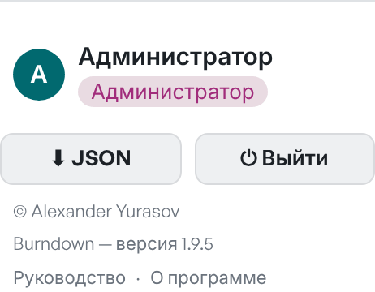
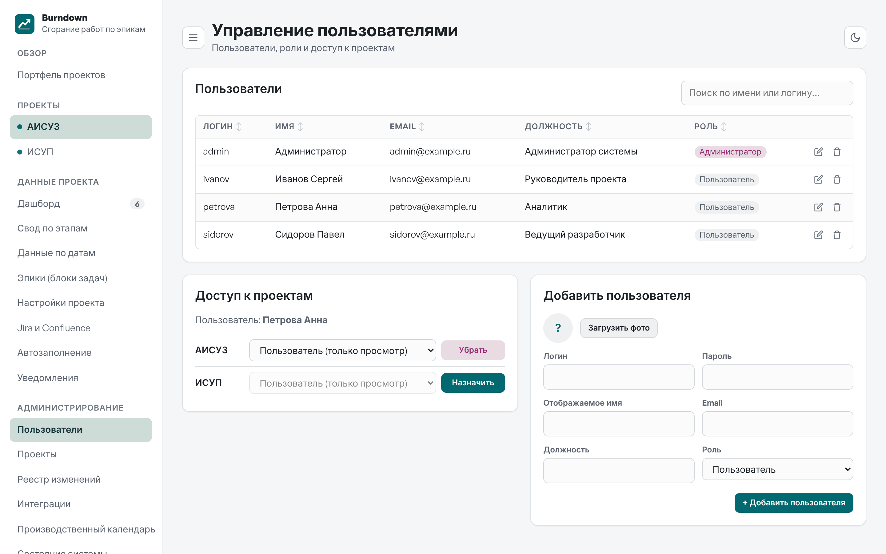
Для каждого проекта в блоке «Доступ к проектам»:
Изменения действуют сразу: при следующем действии пользователь увидит или потеряет проект.
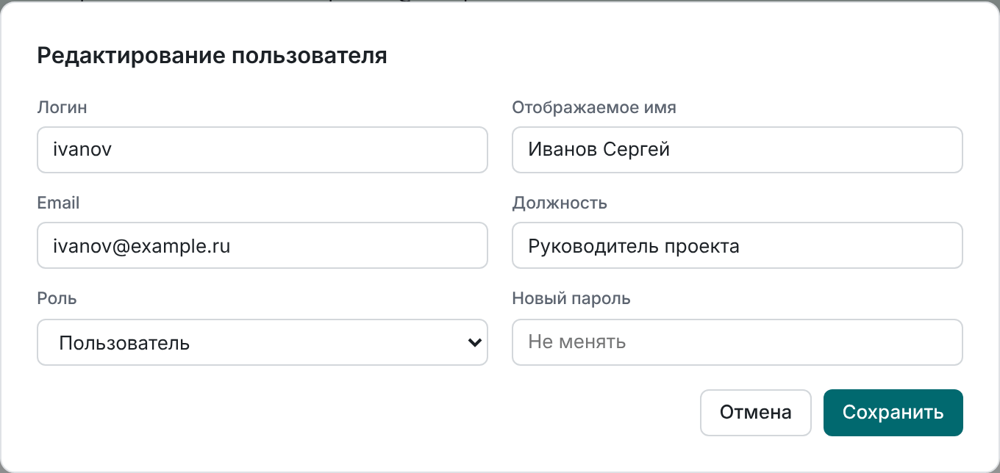
В окне редактирования меняются имя, email, должность, фото, роль и пароль (поле Новый пароль оставьте пустым, чтобы не менять). ФИО, email и должность пользователи сами не меняют — только администратор.
Удаление пользователя закрывает ему доступ ко всем проектам. Его записи в реестре изменений сохраняются.
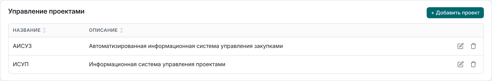
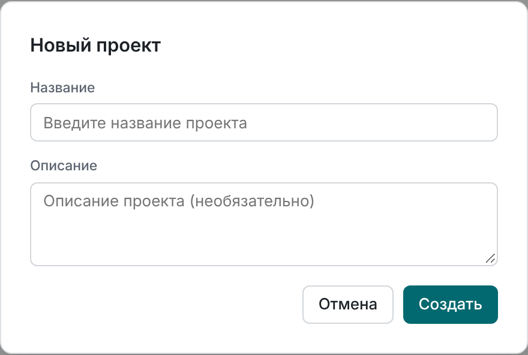
Важно. Удаление проекта необратимо. Перед удалением выгрузите проект в JSON.
Администратор видит все проекты, поэтому ему доступен Обзор → Портфель проектов — выводы о сроках по всем проектам на одной странице (см. «Руководство пользователя», раздел «Портфель проектов»). Остальные пользователи видят в портфеле только проекты, к которым у них есть доступ.
Выводы и производительность. Выводы, статусы и шанс успеть для дашборда, портфеля, PDF и дайджеста считаются на сервере. Первый расчёт проекта после запуска службы или изменения данных занимает до секунды на десяток эпиков (2000 сценариев Монте-Карло на эпик и этап); результат запоминается в памяти процесса до следующего изменения данных.
Кнопка JSON внизу бокового меню выгружает текущий проект: название, описание, эпики, замеры, цели этапов и настройки. Файл подходит для архива и передачи данных в другие системы. Подключение к Jira и токены в экспорт не попадают.
Реестр фиксирует, кто, когда и что изменил: эпики, замеры, цели этапов, настройки, проекты, пользователей, подключение к Jira, кнопки среза, расписания автозаполнения и результаты автозапусков. Для каждого изменения указаны поле, прежнее и новое значение.
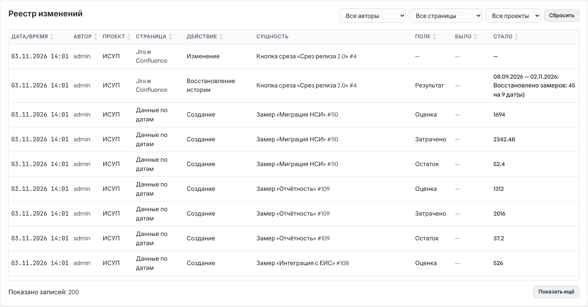
Автоматические запуски записываются от имени Автозаполнение. Выберите этого автора в фильтре, чтобы увидеть результаты запусков («Сохранено замеров за …» или текст ошибки) и созданные ими замеры.
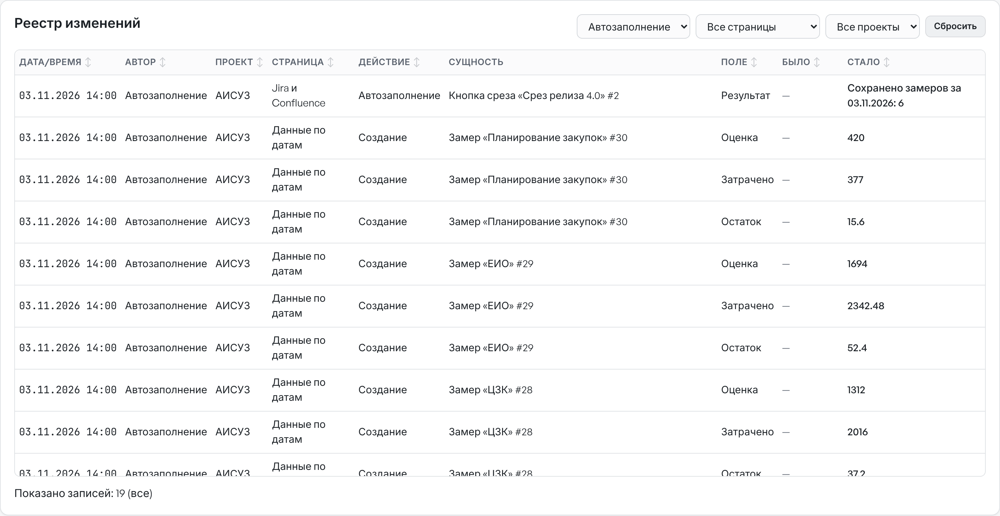
Запуск по кнопке Запустить сейчас записывается от имени пользователя, который её нажал.
Подключения к Jira и Confluence — одни для всех проектов. Их настраивает администратор в разделе «Администрирование» → Интеграции. Руководители проектов в разделе «Jira и Confluence» своего проекта видят только, настроены ли подключения, и настраивают кнопки среза — какие задачи Jira относятся к эпикам, — запись прогноза в Jira (если администратор её разрешил) и отчёт проекта в Confluence.
Когда срез или автозапуск у руководителя завершается ошибкой подключения, он видит её кратко, без адреса Jira: «Не удалось подключиться к Jira — сообщите администратору…». Причину с адресом и подробностями показывает Проверить подключение в «Интеграциях». Пошаговая настройка кнопок и расписания описана в «Руководстве пользователя».
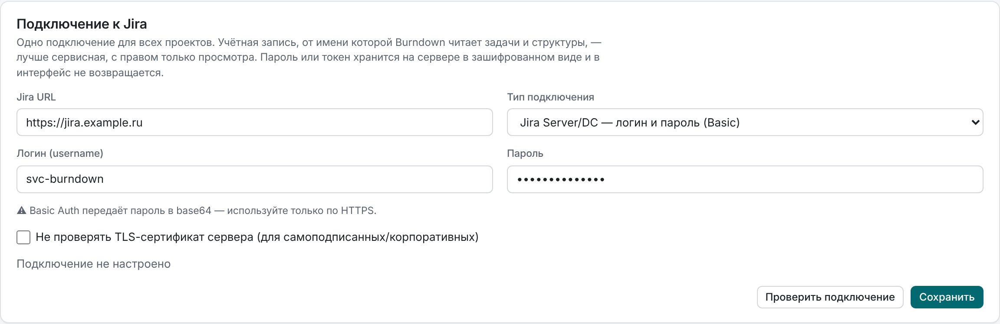
svc-burndown) с правом просмотра нужных проектов Jira и структур Structure. Так срезы не зависят от отпуска или увольнения сотрудника.https://jira.example.ru (если Jira открывается по пути — вместе с ним: https://portal.example.ru/jira).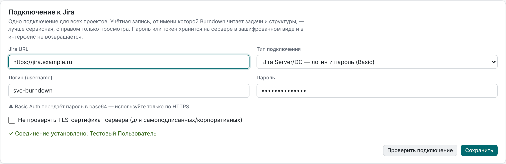
Особенности входа по паролю в Jira Server / Data Center:
Отключить удаляет подключение и пароль; кнопки среза во всех проектах сохраняются, но не работают до нового подключения.
| Требование | Подробности |
|---|---|
| Сетевой доступ | Сервер Burndown обращается к Jira сам (не браузер пользователя): нужен доступ с сервера к адресу Jira по HTTPS |
| Прокси | Берётся из окружения процесса: HTTPS_PROXY, HTTP_PROXY, NO_PROXY |
| Учётная запись Jira | Право просмотра проектов и задач; для кнопок со структурой — право просмотра структуры; для записи прогноза — право редактировать задачи эпиков |
| Плагин Structure | Для кнопок со структурой: Structure (Tempo, ранее ALM Works) с REST API /rest/structure/2.0 (Jira Server/DC). Для показателей из колонок Structure (Σ, формулы) — Value API /rest/structure/2.0/value (Structure 4 и новее): колонка передаётся спецификацией атрибута, «Σ по вложенным» с исключением дубликатов — агрегатом языка формул SUM{…}, пользовательские поля — как customfield с fieldId; колонки «После фильтрации» — с фильтром доски в forestSpec (трансформация com.almworks.jira.structure:filter-jql). Кнопки без структуры работают без плагина |
| Версия Jira | Server/DC — логин и пароль (любая версия) или PAT (8.14 и новее); Jira Cloud — email и API-токен |
Burndown читает данные Jira: задачи, их поля, список полей, структуры и значения колонок Structure. Записывает в Jira он только прогноз по эпикам — в выбранные руководителем пользовательские поля и только если администратор разрешил запись (см. «Запись прогноза в Jira»).
Значения колонок Structure считаются от имени сервисной учётной записи: формула видит только те задачи, которые видит эта учётная запись. Если колонка в Burndown даёт меньше, чем в структуре у пользователя, — выдайте учётной записи право просмотра недостающих проектов.
| Тип | Аутентификация | REST API |
|---|---|---|
| Jira Server/DC — логин и пароль (Basic) | Basic (логин и пароль, UTF-8) | /rest/api/2 |
| Jira Server/DC — Personal Access Token | Authorization: Bearer <PAT> |
/rest/api/2 |
| Jira Cloud — email + API-токен | Basic (email и API-токен) | /rest/api/3 |
Работа плагина Structure в Jira Cloud не проверялась. Если REST API Structure недоступен, Burndown сообщит «Плагин Structure недоступен в этой Jira» — используйте кнопки без структуры.
SECRET_KEY, и хранится в базе в зашифрованном виде.https://хост[:порт][/путь]: без логина в адресе, параметров «?» и «#». Перенаправления Jira не выполняются — если Jira отвечает перенаправлением (например, с http:// на https://), срез сообщит итоговый адрес, который нужно указать в подключении. Текст ответа, не похожий на ошибку Jira, в сообщениях не показывается.SECRET_KEY сменился (или потерян файл .secret_key), сохранённые токены расшифровать нельзя: срез сообщит «Сохранённый токен не удаётся расшифровать (сменился SECRET_KEY сервера) — введите токен заново».Обновление с версий до 1.6.0. Раньше подключение к Jira задавалось в каждом проекте. При обновлении общим становится подключение проекта, в котором больше всего кнопок среза; прежние записи в базе сохраняются. Если в проектах были разные адреса Jira, в журнале службы будет предупреждение — проверьте «Интеграции».
С версии 1.2.0 каждый срез сохраняет состав эпиков по задачам Jira на день среза: ключ и тему задачи, статус и его категорию, остаток, затраченное время, оценку и признаки неполных данных. Из этих данных строятся блок «Задачи Jira по эпикам», burn-up эпика и список задач на дашборде.
summary, status и parent — отдельных прав в Jira не требуется.jira_issue_snapshots: одна запись на задачу эпика в день; повторный срез за тот же день заменяет записи. Ориентир объёма: 6 эпиков по 200 задач при ежедневном автозаполнении — около 440 тыс. строк в год, это нормальная нагрузка для SQLite.С версии 1.3.0 руководитель проекта может восстановить замеры и состав задач на прошлые даты по журналу изменений Jira (кнопка ↺ История у кнопки среза).
/issue/{key}/changelog. Запускайте восстановление больших структур вне часов пик.jira_history_jobs, интерфейс опрашивает его раз в секунду. Ограничения тайм-аута gunicorn на него не действуют. По одной кнопке одновременно идёт только одно восстановление.Проекты могут записывать в задачи эпиков прогноз завершения, статус сроков, шанс успеть и главный вывод — в пользовательские поля Jira, которые выбирает руководитель проекта (раздел «Jira и Confluence» → «Прогноз в Jira», см. «Руководство пользователя»). Запись выключена, пока администратор её не разрешит.
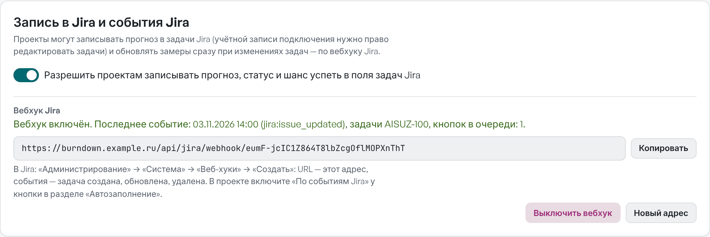
Как работает запись:
customfield_…) подходящего типа; системные поля — срок, оценка, статус задачи — Burndown не меняет;/rest/api/2/issue/{ключ} (в Jira Cloud тоже) от имени учётной записи подключения; в истории задачи Jira правки видны от её имени;Вебхук позволяет обновлять замер на сегодня вскоре после изменения задач, а не только по расписанию.
https://burndown.company.ru/api/jira/webhook/<секрет> (основа адреса — Адрес Burndown из настроек рассылок). Копировать — скопировать его.Как это работает:
Jira должна иметь сетевой доступ к Burndown по адресу вебхука (входящее соединение на сервер Burndown по HTTPS).
Отчёты проектов публикуются в Confluence от имени одной учётной записи.
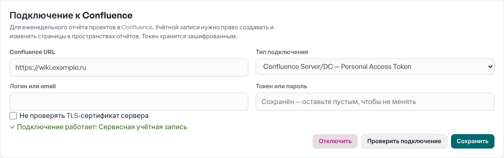
https://wiki.company.ru, для Cloud — https://company.atlassian.net/wiki.Токен хранится зашифрованным и отправляется только на тот адрес, для которого введён. CONFLUENCE_ALLOWED_HOSTS (через запятую) ограничивает хосты Confluence так же, как JIRA_ALLOWED_HOSTS — Jira. Публикации выполняет фоновый планировщик в выбранный проектом день и время; итог — в блоке проекта и в реестре изменений (раздел «Отчёт в Confluence»).
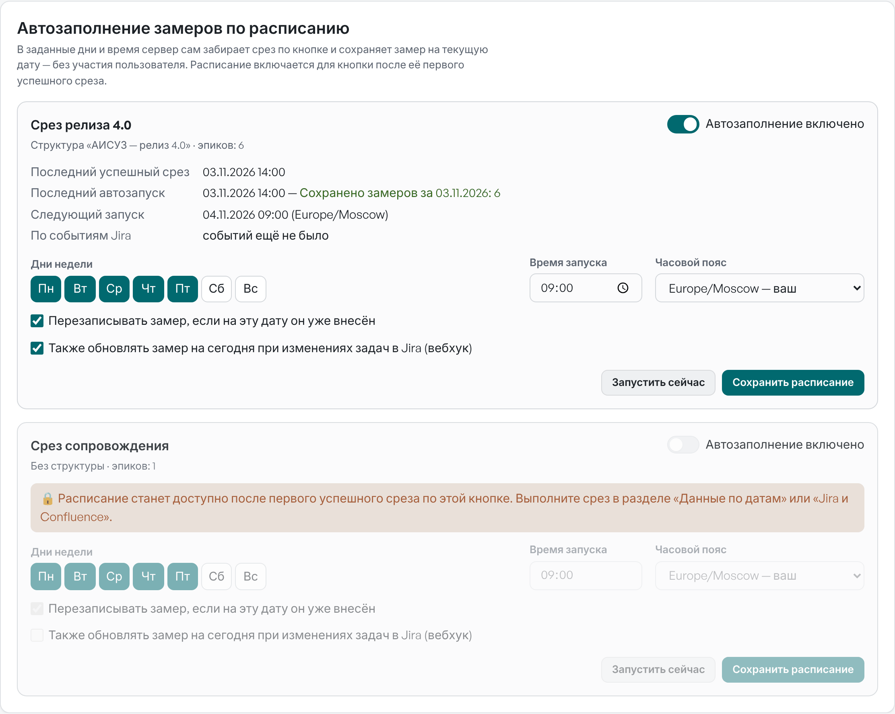
| Параметр | Назначение |
|---|---|
BURNDOWN_SCHEDULER=0 |
Отключить фоновый планировщик в этом процессе (например, на тестовом стенде или в дополнительном экземпляре) |
TZ сервера |
На расписание не влияет: время запуска считается в часовом поясе, выбранном в расписании |
Планировщик запускается вместе с приложением — отдельной службы или cron не требуется. Он должен работать хотя бы в одном процессе Burndown: если планировщик отключён везде, расписания не выполняются.
Важно. Сервер должен работать постоянно (systemd с
Restart=always). При запуске вручную из терминала автозаполнение остановится вместе с терминалом.
| Признак | Что проверить |
|---|---|
| В карточке ошибка 401 | Сменился пароль сервисной учётной записи или истёк токен — введите новый в «Интеграциях» |
| В карточке «Jira требует ввести CAPTCHA» | Войдите в Jira в браузере под сервисной учётной записью и пройдите проверку |
| «Не удалось подключиться к …» | Доступ с сервера к Jira, прокси (HTTPS_PROXY), DNS |
| «Ошибка TLS/сертификата» | Добавьте корпоративный корневой сертификат в систему или включите Не проверять TLS-сертификат |
| Последний автозапуск не обновляется | Работает ли служба (systemctl status burndown), не задан ли BURNDOWN_SCHEDULER=0, включено ли расписание и выбран ли сегодняшний день |
| Ошибки в журнале | journalctl -u burndown — сообщения журнала burndown.autofill |
| Срез или автозапуск идёт долго | journalctl -u burndown | grep burndown.jira — по каждому срезу, автозапуску и восстановлению истории записано число запросов к Jira и их время. Обычно 2–7 запросов на кнопку; если время большое при малом числе запросов — медленно отвечает Jira или сеть |
| Быстрая общая проверка | Раздел «Состояние системы»: планировщик, Jira, автозаполнение, рассылки и свежесть замеров на одной странице |
| Эпик проекта появился или стал «Сдано» сам | Включена синхронизация эпиков с Jira у кнопки (⇄ Эпики); изменения — в реестре с действием «Синхронизация с Jira» |
| Замер по событиям Jira не обновляется | В «Интеграциях» — последнее принятое событие: если событий нет, Jira не может достучаться до Burndown или вебхук в Jira не создан; если «кнопок в очереди: 0» — у кнопки не отмечено «по событиям» или задача не относится к её эпикам |
Раздел Производственный календарь задаёт праздники и переносы выходных для всех проектов, где в настройках включён расчёт сроков в рабочих днях. В проекте руководитель может добавить только свои особые даты.
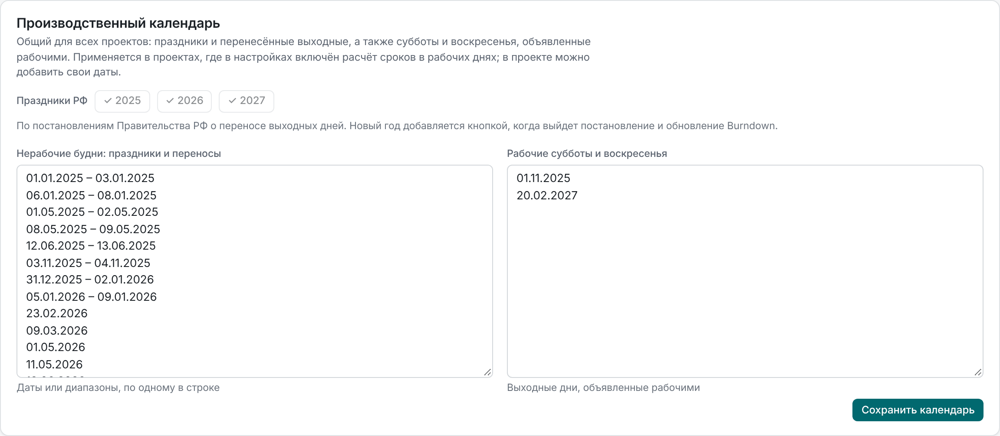
При первом запуске версии 1.8.0 календарь заполняется праздниками РФ на 2025–2027 годы по постановлениям Правительства РФ о переносе выходных дней (№ 1335 от 04.10.2024, № 1466 от 24.09.2025, № 1187 от 17.09.2026): в каждом году получается 247 рабочих дней, как в официальном производственном календаре. Кнопки + 2025, + 2026, + 2027 добавляют праздники года, если их удалили; уже внесённый год отмечен ✓. Праздники следующего года появятся в кнопках с обновлением Burndown после выхода постановления — до тех пор их можно ввести вручную. Изменения календаря записываются в реестр изменений.
Раздел Состояние системы показывает, работает ли всё, от чего зависят данные проектов. Каждый компонент — карточка со статусом «В порядке», «Требует внимания», «Ошибка» или «Не настроено» и пояснением.
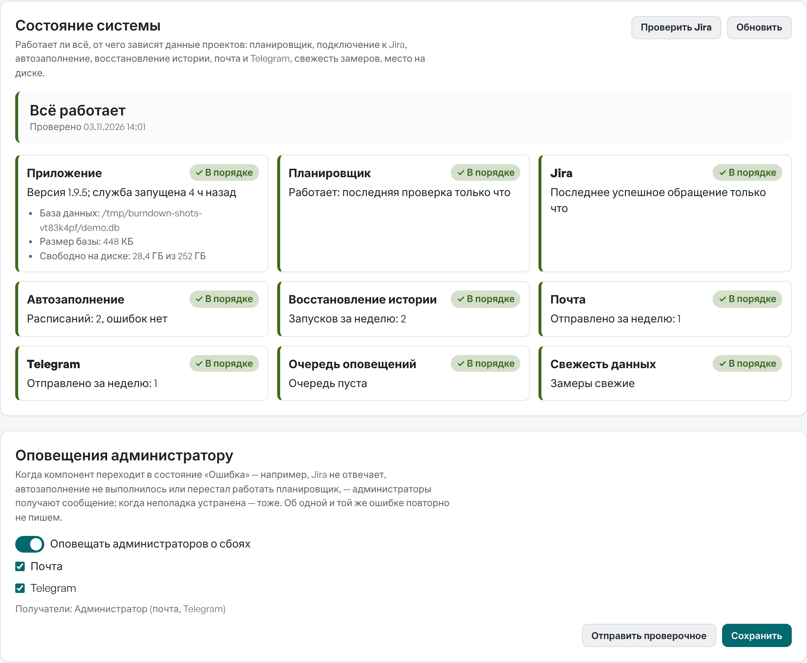
| Компонент | Что проверяется |
|---|---|
| Приложение | Версия, когда запущена служба, размер базы и свободное место на диске (меньше 1 ГБ или 5 % — замечание) |
| Планировщик | Отмечается ли фоновый планировщик каждые 30 секунд; нет отметки дольше 5 минут — ошибка |
| Jira | Подключение настроено ли, чем закончилось последнее обращение к Jira — срез, автозаполнение, восстановление истории, синхронизация эпиков. Проверить Jira — проверка прямо сейчас |
| Автозаполнение | Расписания с ошибкой последнего запуска и запуски, не выполненные сегодня через час после назначенного времени |
| Восстановление истории | Запуски с ошибкой за неделю и зависшие дольше двух часов |
| Почта, Telegram | Настроены ли; ошибки отправки за неделю, последняя отправка не удалась — ошибка |
| Очередь оповещений | Оповещения, не доставленные дольше часа |
| Свежесть данных | Проекты, где у несданных эпиков нет замеров дольше порога из настроек проекта |
Когда компонент переходит в состояние «Ошибка» — Jira не отвечает, автозаполнение не выполнилось, перестал работать планировщик, не уходит почта, — Burndown сообщает об этом всем администраторам: на почту (если в «Пользователях» указан их email и подключена почта) и в Telegram (если администратор привязал Telegram в профиле и подключён бот). Когда неполадка устранена, приходит сообщение «неполадки устранены». Об одной и той же ошибке повторно не пишем: новое сообщение придёт, если изменилась её причина или появилась другая.
Оповещения включены по умолчанию; выключить их или выбрать каналы можно в блоке «Оповещения администратору». Отправить проверочное присылает тестовое сообщение — так удобно проверить, что оповещения дойдут. Отправки видны в журнале отправок «Интеграций» с видом «admin».
Пользователи подписываются на дайджест по проекту и оповещения в разделе «Уведомления» проекта (см. «Руководство пользователя»). Чтобы сообщения уходили, администратор один раз настраивает каналы доставки в разделе «Администрирование» → Интеграции (под подключением к Jira).
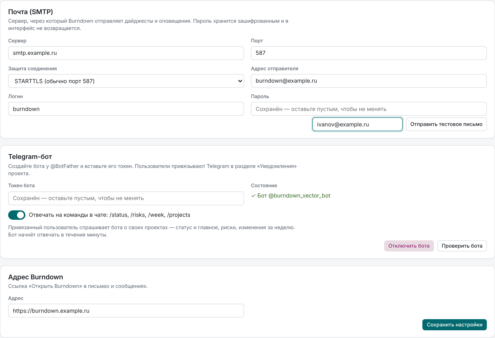
| Поле | Значение |
|---|---|
| Сервер, Порт | Почтовый сервер компании, например smtp.company.ru, порт 587 |
| Защита соединения | STARTTLS (обычно порт 587), SSL/TLS (обычно 465) или без шифрования (порт 25, только внутри сети) |
| Адрес отправителя | От чьего имени уходят письма, например burndown@company.ru |
| Логин, Пароль | Если сервер требует входа. Пустое поле пароля при сохранении оставляет прежний пароль |
Нажмите Сохранить настройки, затем введите свой адрес и нажмите Отправить тестовое письмо — так проверяются сервер, порт, шифрование и логин. При ошибке показывается понятная причина: «SMTP-сервер отклонил логин или пароль», «Не удалось отправить письмо через …» с текстом ошибки сервера.
Письма уходят на email из карточки пользователя — проверьте, что он заполнен у всех, кто будет подписываться.
/newbot, задайте имя и логин бота (например, company_burndown_bot).Пользователи привязывают свой Telegram сами: в «Уведомлениях» проекта нажимают Привязать Telegram, открывают бота по ссылке и нажимают Запустить (Start). Burndown находит это сообщение и запоминает личный чат пользователя.
Отключить бота удаляет токен; уже привязанные чаты сохраняются, но сообщения в Telegram не уходят, пока бот не подключён снова. Если подключить другого бота, пользователям нужно привязать Telegram заново: новый бот не может писать в чаты, начатые со старым.
Отметка Отвечать на команды в чате (включена по умолчанию) позволяет привязанным пользователям спрашивать бота о своих проектах: /status — статус и главное, /risks — главные риски, /week — что изменилось за неделю, /projects — список проектов (и по-русски: /статус, /риски, /неделя, /проекты). Бот отвечает только по проектам, к которым у пользователя есть доступ; чужой чат получает подсказку, как привязать Telegram. Меню команд Burndown сам задаёт боту.
getUpdates); при нескольких воркерах gunicorn остальные ждут — блокировка файлом рядом с базой. Под отметкой видно, когда был последний опрос.getUpdates), — Telegram отдаёт сообщения только одному получателю.Адрес — внешний адрес Burndown, например https://burndown.company.ru. По нему в письмах и сообщениях строится ссылка «Открыть Burndown». Если адрес не задан, ссылки в сообщениях нет.
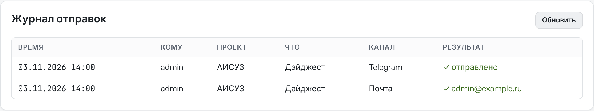
Внизу раздела «Интеграции» — последние 100 отправок: время, получатель, проект, что отправлено (дайджест, оповещение, тест), канал и результат. Ошибки видны с причиной — например, «Telegram не привязан» или «Forbidden: bot was blocked by the user», если пользователь заблокировал бота.
SECRET_KEY) и в интерфейс не возвращаются.api.telegram.org по HTTPS (порт 443). Если сервер выходит в интернет через прокси, задайте HTTPS_PROXY в окружении службы — его использует и связь с Jira, и Telegram.| Признак | Что проверить |
|---|---|
| «SMTP-сервер отклонил логин или пароль» | Логин и пароль; у некоторых серверов нужен пароль приложения |
| «Не удалось отправить письмо через …: Connection refused / timed out» | Адрес и порт сервера, доступ с сервера Burndown (nc -vz smtp.company.ru 587), межсетевой экран |
| Ошибка сертификата при STARTTLS/SSL | Корпоративный корневой сертификат в системе сервера |
| «Telegram отклонил токен бота» | Токен у @BotFather (/token), не отозван ли он |
| «Telegram недоступен» | Доступ к api.telegram.org, HTTPS_PROXY |
| Письма не доходят, хотя в журнале «✓» | Папка «Спам», правила почтового сервера для адреса отправителя (SPF, DKIM) |
| Дайджесты не уходят совсем | Работает ли служба и планировщик (BURNDOWN_SCHEDULER не равен 0); ошибки — в journalctl -u burndown |
| Бот не отвечает на команды | Включена ли отметка Отвечать на команды в чате и обновляется ли «последний опрос»; не получает ли сообщения этого бота другая программа (journalctl -u burndown | grep telegram — ошибка «Conflict: terminated by other getUpdates request») |
api.telegram.org — если используются рассылки.Внешние ресурсы из интернета приложению не нужны: Chart.js и шрифты лежат в static/vendor.
sudo apt update && sudo apt install -y python3 python3-venv python3-pip nginx
sudo useradd -m -s /bin/bash burndown
sudo mkdir -p /opt/burndown && sudo chown burndown:burndown /opt/burndown
# скопируйте файлы приложения в /opt/burndown, затем:
sudo -u burndown bash -c 'cd /opt/burndown && python3 -m venv venv && \
venv/bin/pip install -r requirements.txt && venv/bin/python init_db.py'init_db.py создаёт базу burndown.db с администратором admin / Test198! и демонстрационными проектами.
Важно.
init_db.pyпересоздаёт базу с нуля. Запускайте его только при первой установке — никогда при обновлении.
Файл /etc/systemd/system/burndown.service:
[Unit]
Description=Burndown Tracker (Gunicorn)
After=network.target
[Service]
User=burndown
Group=burndown
WorkingDirectory=/opt/burndown
Environment="PATH=/opt/burndown/venv/bin"
Environment="DB_PATH=/opt/burndown/burndown.db"
Environment="SESSION_COOKIE_SECURE=1"
ExecStart=/opt/burndown/venv/bin/gunicorn -w 4 -k gthread --threads 8 --timeout 120 -b 127.0.0.1:5000 app:app
Restart=always
RestartSec=5
[Install]
WantedBy=multi-user.targetsudo systemctl daemon-reload && sudo systemctl enable --now burndown| Параметр окружения | Назначение |
|---|---|
SECRET_KEY |
Ключ подписи сессий и шифрования токенов Jira, пароля SMTP и токена Telegram-бота. Если не задан, генерируется и сохраняется в .secret_key рядом с базой (права 600) — обычно этого достаточно. Задавая явно, используйте openssl rand -hex 32: ключ короче 32 символов не используется, вместо него берётся .secret_key, а сохранённые токены перешифровываются автоматически |
JIRA_ALLOWED_HOSTS |
Необязательно: через запятую хосты Jira, к которым разрешено подключаться, например jira.company.ru или .company.ru (домен и поддомены). Без параметра — любой адрес |
CONFLUENCE_ALLOWED_HOSTS |
То же для Confluence |
DB_PATH |
Путь к файлу базы SQLite |
SESSION_COOKIE_SECURE=1 |
Cookie сессии только по HTTPS — включайте, когда настроен HTTPS |
HTTPS_PROXY, NO_PROXY |
Прокси для запросов к Jira и Telegram |
BURNDOWN_SCHEDULER=0 |
Отключить планировщик автозаполнения, рассылок, публикаций и опрос Telegram-бота в процессе |
BURNDOWN_WARMUP=0 |
Не пересчитывать «Выводы» заранее после изменения данных (по умолчанию пересчитываются в фоне) |
Nginx проксирует запросы на 127.0.0.1:5000; HTTPS настраивается через certbot. Полные примеры конфигурации — в README.md.
Сборка на сервере не нужна: приложение — Python и готовые статические файлы.
.secret_key (раздел «Резервное копирование»).git pull или копированием), не трогая burndown.db и .secret_key.venv/bin/pip install -r requirements.txt (в 1.1.0 добавлены requests и cryptography для связи с Jira; в 1.2.0–1.9.5 новых зависимостей нет).sudo systemctl restart burndown.Структура базы обновляется автоматически при запуске: новые таблицы и столбцы добавляются, существующие данные — пользователи, пароли, проекты, эпики, замеры, цели, настройки, реестр изменений, подключения к Jira и сохранённые токены — не изменяются. В 1.5.0 добавляются таблицы рассылок и подписок; до настройки рассылок администратором сообщения не отправляются. В 1.6.0 подключение к Jira становится общим: им становится подключение проекта, где больше всего кнопок среза (см. «Связь с Jira»). В 1.6.1 к составу задач добавляется признак восстановленного по истории среза; прежние записи считаются настоящими срезами. В 1.7.0 к настройкам проектов добавляются уровень доверия диапазона, календарь рабочих дней, единицы и пороги выводов, а к учётным записям — личный вид дашборда; новые поля пусты, а пустое значение означает «по умолчанию», поэтому прогнозы и статусы после обновления не меняются, пока руководитель проекта не изменит настройки. В 1.8.0 к кнопкам среза добавляются настройки синхронизации эпиков (выключена, пока руководитель её не включит), а общий производственный календарь заполняется праздниками РФ на 2025–2027 годы; он влияет только на проекты, где включён расчёт в рабочих днях. Оповещения администратору включаются сразу: проверьте получателей в «Состоянии системы». В 1.9.0 база переходит в режим WAL (рядом с burndown.db появляются файлы burndown.db-wal и burndown.db-shm — это нормально, удалять их при работающей службе нельзя), добавляются индексы, кэши расчётов, ежедневные снимки выводов, очередь событий Jira и настройки записи в Jira и отчётов в Confluence; запись в Jira и вебхук выключены, пока администратор их не включит, а команды Telegram-бота включены, если бот подключён. Первое открытие «Выводов» большого проекта после обновления может занять несколько секунд — дальше расчёты берутся из кэша. Перед обновлением рекомендуем перевести на новые параметры строку ExecStart службы (раздел «Производительность»).
Номер версии и «Историю версий» в приложении Burndown берёт из файла docs/versions.md, а руководства для кнопок «Открыть» и «Скачать» и для чтения в приложении (файлы .html и папка images) — из docs/manuals. Обе папки входят в поставку: при обновлении заменяйте их вместе с остальными файлами. Обновление проверено на базах всех предыдущих версий, начиная с первой.
Если после замены файлов забыть шаг 3, приложение всё равно запустится и будет работать с данными; недоступна будет только связь с Jira — с сообщением «На сервере не установлены библиотеки для связи с Jira… выполните pip install -r requirements.txt и перезапустите приложение».
С версии 1.9.0 Burndown рассчитан на десятки одновременных пользователей и проекты с ежедневными замерами за годы.
| Что сделано | Эффект |
|---|---|
| Монте-Карло: длинные ряды замеров объединяются в недельные интервалы, расчёт останавливается, когда цель уже недостижима | «Выводы» проекта с 40 эпиками и ежедневными замерами за год — 3 с при первом расчёте вместо 2 минут |
Результаты Монте-Карло, «Выводов» и сводок хранятся в базе (mc_cache, result_cache) и общие для всех воркеров |
После перезапуска и в других воркерах — 0,1–0,4 с вместо повторного расчёта |
| Расчёты кэшируются по «версии» данных проекта: замеры, эпики, цели, настройки, срезы Jira, общий календарь, дата | Повторные запросы — 4–10 мс; данные пересчитываются только после изменений |
| ETag: браузер переспрашивает «изменилось ли» и получает ответ 304 без данных | Повторные открытия разделов почти не нагружают сеть и сервер |
| Сжатие gzip ответов больше 1,4 КБ | Данные проекта по сети — в 5–7 раз меньше (1 МБ → 150 КБ) |
| Фоновый пересчёт «Выводов» после изменения данных | Следующий пользователь получает готовый результат |
| Режим WAL базы, ожидание блокировки до 10 с | Чтение не ждёт записи; одновременные сохранения не дают ошибок «database is locked» |
| В адресах стилей и скрипта — метка версии | После обновления браузер и nginx сразу отдают новый интерфейс, хотя статика кэшируется на 30 дней |
| Графики с плотными данными — без анимации и маркеров точек | Дашборд большого проекта рисуется за 0,5 с вместо 2,4 с |
Замеры на стенде (4 ядра, 4 воркера × 8 потоков, проект из 40 эпиков и 10 400 замеров, 50 одновременных пользователей без пауз): только чтение — около 450 запросов в секунду без ошибок; при непрерывной записи замеров — 125–165 запросов в секунду без ошибок.
Рекомендации:
-w <число ядер> -k gthread --threads 8 --timeout 120. Потоки позволяют одному воркеру обслуживать ожидание базы и сети, не блокируя остальных пользователей; длинные операции (восстановление истории) идут в фоне и тайм-аутом не ограничены.Content-Encoding). Для статики можно включить gzip on; gzip_types text/css application/javascript; — см. README.md.Сохраняйте два файла:
burndown.db — все данные;.secret_key (если SECRET_KEY не задан в окружении) — без него после восстановления пользователям придётся войти заново, а токены Jira, пароль SMTP и токен Telegram-бота — ввести заново.Копия работающей базы без остановки службы (нужен пакет sqlite3: sudo apt install -y sqlite3):
sudo -u burndown sqlite3 /opt/burndown/burndown.db \
".backup /opt/burndown/backup/burndown-$(date +%Y%m%d).db"Восстановление: остановите службу, удалите файлы burndown.db-wal и burndown.db-shm (если есть), замените burndown.db копией, запустите службу.
Копируйте базу только командой .backup (или при остановленной службе): с версии 1.9.0 база работает в режиме WAL, и простое копирование файла burndown.db во время работы может не содержать последних изменений из burndown.db-wal.
Совет. Настройте ежедневную копию через cron и храните копии вне сервера. Для отдельных проектов дополнительно используйте экспорт в JSON.
curl -I https://jira.example.ru.svc-burndown) с правом просмотра нужных проектов и структур.init_db.py).burndown.db и .secret_key (или тот же SECRET_KEY в окружении).burndown@company.ru).nc -vz smtp.company.ru 587 и curl -I https://api.telegram.org.admin по умолчанию сразу после установки.JIRA_ALLOWED_HOSTS ограничивает адреса Jira, к которым вообще можно подключиться.SESSION_COOKIE_SECURE=1.SECRET_KEY или защитите файл .secret_key (права 600) и включите его в резервные копии./revoke у @BotFather и новый токен в «Интеграциях».Пользователь не видит проект. Проверьте в «Пользователях», назначен ли ему проект.
Руководитель не видит «Jira и Confluence» и «Автозаполнение». У него роль «Пользователь» в этом проекте — назначьте Руководитель (редактирование).
Руководитель просит подключить свою Jira. Подключение одно на весь Burndown и меняется только в «Интеграциях». Если задачи проекта лежат в той же Jira, но не видны в срезе, — выдайте сервисной учётной записи права на проект Jira или структуру.
Где взять руководство пользователя для сотрудников? В приложении: внизу бокового меню Руководство — читается прямо в приложении, с оглавлением и поиском; там же и в О программе — Открыть PDF, Скачать PDF, Скачать Word. Ссылку на нужный раздел руководства можно скопировать из адресной строки. Руководство администратора там же доступно только администраторам. Файлы берутся из docs/manuals на сервере.
После перезапуска сервера всех выкинуло на страницу входа. Сменился SECRET_KEY или потерян .secret_key. Верните прежний ключ; иначе пользователям нужно войти заново, а токены Jira — ввести заново.
Автозаполнение выполняется дважды? Нет: день запуска захватывается в базе атомарно, второй воркер или процесс запуск пропустит.
Можно ли запускать автозаполнение чаще раза в день? Расписание — один запуск в день на кнопку. Чтобы замеры обновлялись при изменениях в Jira, включите вебхук Jira (см. «Вебхук Jira: замеры по событиям»); для внепланового обновления — Запустить сейчас или срез вручную.
База выросла после обновления до 1.9.0. В базе появились кэши расчётов и ежедневные снимки выводов. Старые записи кэшей удаляются автоматически; снимки выводов — по одному на проект в день, это несколько килобайт.
«Выводы» открылись медленно после обновления. Первый расчёт большого проекта после обновления — до нескольких секунд; дальше результаты берутся из кэша. Если медленно всегда — проверьте, что служба запущена с несколькими воркерами и потоками (раздел «Производительность»).
Пришло письмо «Burndown: проблема — …». Это оповещение администратору: откройте «Состояние системы» — в карточке компонента причина и подробности. Отключить оповещения можно там же.
Нужен праздник, которого нет в календаре (например, региональный). Добавьте его в «Производственный календарь» — он учтётся во всех проектах с расчётом в рабочих днях; особый выходной одной команды руководитель добавляет в настройках своего проекта.
Пользователь жалуется, что не приходят уведомления. Найдите его в «Журнале отправок» раздела «Интеграции»: там результат каждой попытки с причиной ошибки. Если записей нет — у него не включён дайджест или оповещения, либо ещё не наступило время отправки.
Можно ли разослать дайджест сразу всем? Нет: подписка у каждого своя. Пользователь может нажать Отправить сейчас в своих «Уведомлениях».
Нужно ли что-то собирать при обновлении? Нет: замените файлы, обновите зависимости pip install -r requirements.txt и перезапустите службу.
Что будет с данными при обновлении? Структура базы дополняется автоматически, данные сохраняются. Не запускайте init_db.py на рабочей базе.